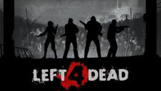
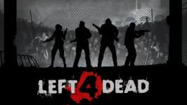

OBJETIVO DEL JUEGO
Eres un superviviente en un apocalipsis zombi. El objetivo principal es:
Sobrevivir hasta llegar a los puntos de evacuacion(safe rooms o rescate final).
Cooperar con tu equipo de 4 jugadores(controlados por humanos o IA). 
Sobrevivir hasta llegar a los puntos de evacuacion(safe rooms o rescate final).
Cooperar con tu equipo de 4 jugadores(controlados por humanos o IA). 
PERSONAJES
Cada personajes es igual en habilidades. La diferencia es puramente estética. En L4D 1 tienes:
Bill
Zoey
Francis
Louis
Bill
Zoey
Francis
Louis
ARMAMENTO BASICO
Arma primaria:
Escopetas: daño alto a corta distancia
Rifles de asalto: versátiles
Subfusiles: rápido, pero menos daño
Francotirador: daño alto, preciso
Arma secundaria:
Pistolas: una o dos
Objetos:
Botiquin: rellena salud
Píldoras: salud temporal
Molotov: fuego
Bomba casera(pipe bomb): atrae zombis y luego explota
Escopetas: daño alto a corta distancia
Rifles de asalto: versátiles
Subfusiles: rápido, pero menos daño
Francotirador: daño alto, preciso
Arma secundaria:
Pistolas: una o dos
Objetos:
Botiquin: rellena salud
Píldoras: salud temporal
Molotov: fuego
Bomba casera(pipe bomb): atrae zombis y luego explota
ENEMIGOS
 Comunes:
Comunes:Zombis normales: rápidos, en grupos
Especiales
Boomer: explota y te cubre de vómito(atrae hordas)
Hunter: salta sobre ti, necesita que te rescaten
Smoker: te atrapa con su lengua desde lejos
Tank: enorme, muy fuerte; necesita trabajo en equipo
Witch: sentada,llora; si la molestas, te mata de un golpe
MODOS DE JUEGO
Campaña: historia cooperativa
Versus: jugadores controlan zombis especiales
Supervivencia: aguantar el mayor tiempo posible
Realista: más dificil, sin ayudas visuales
Versus: jugadores controlan zombis especiales
Supervivencia: aguantar el mayor tiempo posible
Realista: más dificil, sin ayudas visuales
CONSEJOS RAPIDOS
No te separes del grupo
Comparte botiquines si un aliado está en rojo
Comunicacion constante(usa micrófono o chat).
Dispara con cuidado: hay fuego amifo
Atiende a los sonidos: cada infectado especial tiene sonidos únicos
Cierra las puertas detrás de ti
Dispara a la cabeza para matar más rápido
Protege al jugador que lleva un objeto clave
Prioriza eliminar a los especiales cuando aparezcan.
No dispares a la Witck... a menos que estés listo para enfrentarte a ella.
Comparte botiquines si un aliado está en rojo
Comunicacion constante(usa micrófono o chat).
Dispara con cuidado: hay fuego amifo
Atiende a los sonidos: cada infectado especial tiene sonidos únicos
Cierra las puertas detrás de ti
Dispara a la cabeza para matar más rápido
Protege al jugador que lleva un objeto clave
Prioriza eliminar a los especiales cuando aparezcan.
No dispares a la Witck... a menos que estés listo para enfrentarte a ella.